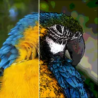

Мультяшный

Сводит цвета к нескольким уровням и рисует контуры там, где изображение резко меняется. Сила задаёт, сколько краёв получат контур.
Настройки
| Настройка | Тип | Диапазон | По умолчанию |
|---|---|---|---|
| Сила | Число | от 0 до 100 | 20 |
| Цвет контура | Цвет | – | #000000 |